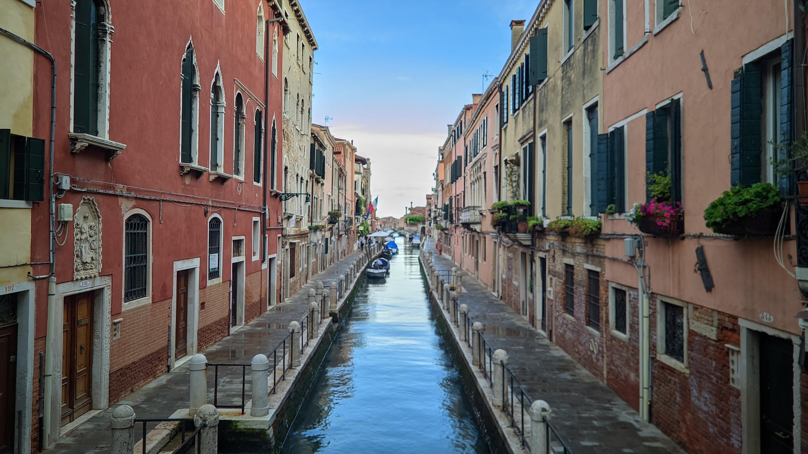

Venetië
-

Venetië behoort tot een van de meest unieke steden die ik ooit heb bezocht. Dit komt natuurlijk door het feit dat het een autovrije stad is, bestaande uit verschillende eilandjes. Alles verloopt via het water; de politie, brandweer, ambulance en het openbaar vervoer, alles gaat over de kanalen. In Venetië tref je de smalste straatjes en knusse pleintjes aan. Omdat Venetië niet zo uitgestrekt is, is er niet bijzonder veel te doen. Daarom hebben wij vooral rondgewandeld om zoveel mogelijk van de stad te zien. Zo nu en dan namen we een pauze op een terrasje om te genieten van onze bourgondische levensstijl door onze bierglazen te vullen en ze daarna leeg te drinken.